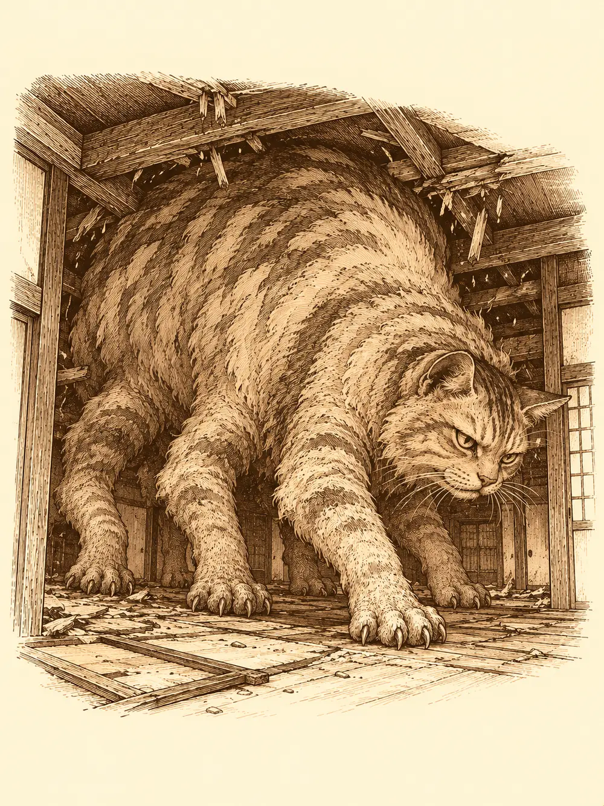

Capítulo 16
Cuanto más comas
Libro II · El favor del shogun
Los pasillos de la base retumbaban con pisadas pequeñas. La niña mayor corría con un sable en la mano, uno de los de los mujina, y los dos tejones corrían detrás de ella con las patas cortas y la cara muy seria, gritándole que lo devolviera. Ella se reía. Tekel había salido a hacer unos recados y la había dejado, como quien dice, a su aire.
Hayate abrió la puerta de su cuarto con el ceño fruncido. Llevaba días meditando y afilando puntas de flecha, y pensaba echarse un rato.
"Callaos, que es la hora de la siesta".
Nadie le hizo caso. Al menos la niña estaba entretenida, pensó, y para algo servían los mujina. Antes de cerrar, le quitó el sable a la niña, le puso la funda y se lo devolvió, para que si golpeaba a alguien fuera con algo blando.
El kamaitachi dormía en su estancia. Casi siempre dormía. Alguien le rellenó el comedero. Peluso, en cuanto le abrieron la puerta, salió disparado por el pasillo del sur y fue dejando a su paso un rastro de polvo y pelusa que alguien tendría que barrer.
En la sala principal, Sirth sostenía al bebé contra el hombro. Había aprendido un par de trucos de Tekel y ya conseguía calmarlo antes de que el llanto se convirtiera en un berrido, aunque las ojeras le llegaban casi a la barbilla. Cuando el pequeño se durmió, lo dejó en la cuna y volvió a sus libros, a sus notas, a su pluma.
"No hagáis ruido", susurró. "He conseguido dormirlo".
"¿Y tú has dormido?".
"Llevo unos días sin dormir. Puedo aguantar un poco más".
Lo que no aguantaba era la despensa. Desde que no estaba Kitaro, nadie llenaba los estantes. Faltaba leche. Faltaban papillas. Faltaba casi todo.
Jin llamó a la puerta de Shiru para que lo acompañara a cargar las bolsas, y por el camino comentó que no les vendría mal una carretilla.
En la taberna, Shiro los recibió con una reverencia. Escuchó la lista con gesto concentrado: leche, papillas, carne, pollo, maíz, pan, cerveza. Lo apuntó todo, lo enrolló con un cordel y les dijo que el pedido llegaría al día siguiente. Para esa noche podían comprar pescado fresco.
En la pescadería, Haru le ofreció a Hayate cambiar su reparto semanal de monedas por pescado, y Hayate aceptó. Shiru, por su parte, se fue a los campos a buscar hortalizas directamente de quien las cultivaba. Un campesino se metió en su casa, revolvió un rato entre ruidos de cajas y salió con una cajita de verduras. No eran muchas, pero daban para un par de comidas y alguna papilla. Shiru las olfateó con aire de entendido y pagó las cinco monedas que le pidieron.
Al volver por la entrada del pueblo se cruzó con un hombre que no era de allí. Llevaba un sombrero de paja hecho jirones y una barba larga, enredada, con restos de comidas antiguas incrustados. Se apoyaba en un cayado. A su lado caminaba un gatito tan flaco que se le contaban las costillas. El hombre olía como un establo en verano.
"No sois de por aquí", le dijo Shiru.
"No, señor. Vagabundos. Vamos por el mundo. Vivo de las ayudas de la gente".
Shiru miró al gato. Se acercó al agua, mojó un poco de pan, cortó un trozo de hortaliza y lo envolvió en la miga como si fueran dos pastelillos.
"Acércalos al fuego hasta que se hagan".
El hombre se lo agradeció con muchas inclinaciones de cabeza y siguió su camino.
Jin, mientras tanto, había pasado por la herrería para encargar la carretilla. El herrero no tenía ninguna, pero le pidió una semana para conseguirla a buen precio. Al salir casi tropezó con el vagabundo, que le hizo una reverencia de samurái a samurái. Después Jin entró en la tienda del alquimista. Había oído hablar de unos objetos mágicos capaces de conservar fría la comida durante días.
"Algo he oído en mis viajes", dijo el alquimista, tocándose la barba. "Una caja fría, la llaman. Déjeme mirarlo".
Ninguno de los dos encargos estaría listo pronto.
Hayate había seguido al vagabundo desde los tejados. Lo vio meterse en un callejón y encender un fuego miserable con cuatro astillas para calentar los dos pastelillos de Shiru. Cuando estuvieron hechos, los dejó los dos delante del gato.
"Come. Hazte fuerte".
El hombre no probó bocado. Hayate se quedó un rato mirándolos desde el alero. Le pareció bien, y le pareció raro.
A la mañana siguiente había un muerto en un callejón del norte.
Dos samuráis acordonaban la zona. Al ver acercarse a los cazadores, uno levantó la mano para detenerlos, pero el otro lo pensó mejor: quizá no les viniera mal un poco de ayuda. Se apartaron.
El hombre tenía el cuerpo abierto por cortes profundos, paralelos, como de garras enormes. Ningún gato ni ningún perro hacía heridas así; parecían de oso. Llevaba el dinero encima. No le habían robado.
Hayate buscó huellas. Las encontró en el suelo, grandes, de una pata pesada, y las siguió hasta la pared y luego por encima de los tejados. Allí arriba, de pronto, las huellas grandes desaparecían y se perdían entre las de pájaros y gatos. Les contó a sus compañeros, sin que lo oyeran los samuráis, lo que se le ocurría: algo que podía transformarse, o volar.
A los guardias solo les dijeron que parecía obra de un animal, y que tuvieran cuidado.
Encontraron al vagabundo cuatro o cinco calles más arriba, dormido en un callejón y cubierto de basura. Alguien le había tirado encima pieles de fruta y sobras; estaban frescas. El gatito dormía pegado a su costado.
Sirth no estaba. Despertaron al hombre y le hablaron del asesinato. El vagabundo se asustó de verdad. Abrazó al gato contra el pecho, miró a todas partes y dijo que tendrían que buscar alguna casa abandonada para dormir, que no podían quedarse en la calle con una bestia suelta. Ninguno de ellos vio engaño en su cara.
Alguien le trajo un cubo de agua del pozo. El hombre se desnudó allí mismo y se lavó, y el agua que caía de él era casi negra. Siguió oliendo, porque no había jabón, y alguien fue a comprarle un trozo.
"Úsalo bien", le dijeron al dárselo. "Te durará unas semanas".
Lo llevaron a la taberna. Unos vecinos que desayunaban se pusieron a protestar en voz alta por el olor, y bajaron la voz cuando los cazadores los miraron. El vagabundo agachó la cabeza.

"No se preocupe, señor. Estoy acostumbrado".
Les contó que iba de pueblo en pueblo buscando un sitio donde vivir tranquilo, y que nunca aguantaba mucho en ninguno. Había recogido al gato hacía un año, cuando unos niños lo estaban apedreando. Desde entonces no se separaban. Shiro trajo la comida y anunció que el pedido había llegado: tres o cuatro cajas que podía llevar a la base cuando quisieran.
Le dieron un pescado entero al gato. Se lo comió en un momento. El hombre empezó su plato, tomó tres o cuatro cucharadas y le dejó al gato todo lo demás. Le dieron otro pescado. El gato se lo comió también, y seguía igual de flaco.
Jin fue a buscar al nekomata. Lo encontró dormido encima del piano, babeando, y tuvo que sobornarlo con un pescado que no le dejó comerse hasta que aceptó acompañarlo. El gato suspiró, se levantó dándole la espalda y lo siguió con la dignidad de quien hace un favor enorme.
En la taberna, el nekomata olfateó al gatito y se le torció la cara. Se le erizó algo en el lomo. Durante un buen rato fingió no hacer caso a nadie. Esperó a que el vagabundo saliera y entonces puso una pata encima de la mesa con un golpe seco y le habló a Hayate, que era el único que entendía su lengua.
"Eso no es un gato. Bueno, sí es un gato, pero no un gato".
"¿Y qué es?".
"¿Me veis a mí? ¿Poderoso? Pues ese es más poderoso que yo". Se rascó la cabeza con una uña, buscando un nombre que no le venía. "Ese gato se hace enorme. Ha crecido por la comida. Y protegerá a su dueño de cualquier cosa mientras le den de comer".
No quiso acompañarlos. Se fue por donde había venido.
Sirth se unió a ellos al salir. Buscaron al vagabundo junto al río y por los callejones viejos de Ukio, y por el camino vieron cómo una vecina lo increpaba y lo echaba a gritos de su puerta. Lo encontraron al fin en una casa abandonada, de muebles rotos y techo a medio caer. Al oír la puerta se encogió y apretó al gato contra sí.
"Tu gato no es un gato", le dijo alguien.
"Claro que es un gato".
"Es un yokai. Y creemos que ha matado a ese hombre".
"¿Mi gato matar a alguien? ¿Cómo va a matar a nadie mi gato?".
No hubo manera. Así que se sentaron a comer con él, sacaron sus raciones y las compartieron, y cada vez que el hombre intentaba pasarle algo al gato, se lo impedían. El gatito empezó a frotarse contra su dueño. Maullaba. Miraba a los cazadores con unos ojos enormes, húmedos, y ninguno de ellos se ablandó. Alguien le pasó al vagabundo un trozo de pan por delante del hocico del gato.
El gatito se quedó sentado, quieto, mirando a su amo, y algo le cambió en la mirada.
Hayate se levantó de golpe, cargó una flecha y apuntó al vagabundo. Era un farol. El gato no lo sabía.
"Os maldigo", dijo una voz en la lengua de los bosques, una voz grave que no salía de ningún hombre. "Vais a pagar por esto".
El gatito empezó a hincharse. El pelo le volvió a crecer en las calvas, brillante, espeso; le brotaron otras dos patas, y luego otras dos, y siguió creciendo hasta que el lomo rozó las vigas y la casa entera crujió. El vagabundo retrocedió, horrorizado, y se agarró al brazo de Jin.
La criatura bajó la cabeza hacia él.
"Ya no te necesito".
Lo destrozó de un zarpazo, allí mismo, colgado todavía del brazo de Jin, y empezó a reírse.
Jin apartó lo que quedaba del hombre y desenvainó la espada de fuego.
"Esto no va solo por mí. Va por tu antiguo dueño".
Hayate disparaba desde la penumbra. Shiru se plantó delante del gato como un luchador antes del combate, se agachó, lo agarró por donde pudo y tiró. La bestia de seis patas cayó de lado con un golpe que levantó polvo del suelo, y Shiru se le echó encima y no la soltó. Con la mano libre agarró un tablón y se lo partió en la cabeza. Luego otro.
El gato, inmovilizado, no podía levantarse. Lanzaba zarpazos que no acertaban. Entonces hizo otra cosa: el cadáver del vagabundo se movió en el suelo, se incorporó con la cabeza colgando y avanzó hacia ellos convertido en un muerto andante que olía peor que en vida.
En ese momento se abrió la puerta y asomó el nekomata. Miró al monstruo, a los cazadores, al muerto que se tambaleaba.
"¿Para qué me habéis traído?".
Salió y cerró la puerta tras de sí.
Hayate abatió al muerto a flechazos hasta que volvió a caer, y esta vez no se levantó. Jin cortaba con su espada de fuego. Shiru seguía encima del gato, rompiendo tablones contra él, uno tras otro, mientras la criatura intentaba arañarle sin conseguirlo. Antes de un nuevo tajo, Jin se detuvo.
"Es tu última oportunidad. Ríndete. Haz algo bueno antes de morir".
El gato no contestó.
Se le escapó la vida por la boca con un último bufido. El cuerpo enorme se desplomó, y empezó a menguar, y a menguar, hasta que en el suelo de la casa abandonada solo quedó un gatito famélico, con las costillas marcadas bajo la piel. Se quedaron un rato mirándolo.
Llevaron al vagabundo al cementerio y acordaron enterrar también al gato. Mientras recogían, alguien se preguntó en voz alta si de verdad había sido él quien había matado al vecino del callejón, y nadie supo responder.
En la base, al pasar Jin, alguien vio asomar un pergamino de su mochila. Jin no dio explicaciones. Se metió en su cuarto y cerró la puerta.
Los mujina comían pan junto a la entrada, con migas hasta en las orejas. Hayate fue al piano donde había vuelto a acomodarse el nekomata y aporreó las teclas con todas sus fuerzas, sin ritmo, solo para despertarlo.
Luego se acercó a la cuna. Estaba vacía.
"¿Y el bebé?".
Los dos mujina se pusieron firmes.
"Nosotros vigilar cuna, señor".
"¿Y la niña?".
"Salir de la cuna, señor. Irse por ahí".
Señalaron hacia un rincón. El bebé gateaba muy contento entre las patas de una silla. Hayate respiró hondo y les explicó que vigilar la cuna quería decir vigilar también lo que había dentro.